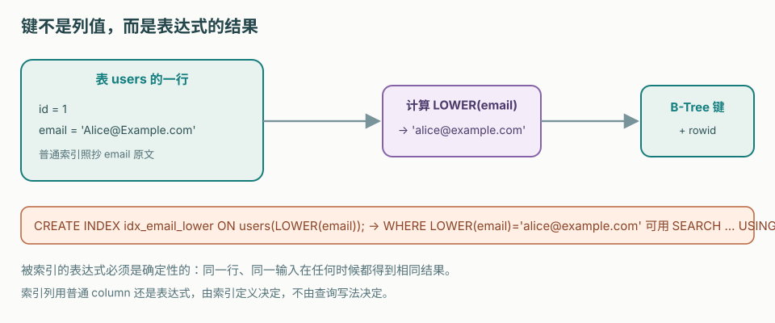

表达式索引与过期索引：确定性契约与自修复
LOWER(email)=? 为什么用不上普通索引？从确定性契约讲到过期表达式索引，以及 3.53.0 的自修复行为、REINDEX EXPRESSIONS 与 STORED 生成列替代方案。
1. LOWER(email)=? 为什么用不上普通索引？
如果对 email 列建了普通索引，查询 WHERE email = 'a@b.com' 能走索引；但改成大小写不敏感匹配 WHERE LOWER(email) = 'a@b.com' 后，被比较的是函数结果，而不是索引里存的原列值，优化器无法用它，只能全表扫描。表达式索引解决的正是这一类问题：把一个表达式的计算结果存成索引键。

LOWER(email)=? 也能命中索引。CREATE INDEX idx_email_lower ON users(LOWER(email));
EXPLAIN QUERY PLAN
SELECT * FROM users WHERE LOWER(email)='alice@example.com';
-- SEARCH users USING INDEX idx_email_lower (<expr>=?)官方定义：表达式索引是建立在 VIRTUAL 生成列或表列的表达式上的索引。它与部分索引（WHERE 限制）不是同一回事，后者只是在建索引时筛选参与的行。参见 Indexes On Expressions 与 Stale Expression Indexes。
2. 确定性是正确性契约
索引能正确工作的前提是：只要对应的表行不变，表达式的值就不能变。因此被索引的表达式只能使用确定性函数——同样输入总是得到同样输出，例如 abs(X)、concat(X,Y)。非确定性函数如 random()、datetime('now') 会被拒绝。
CREATE TABLE t(a);
CREATE INDEX i ON t(random());
-- Error: non-deterministic functions prohibited in index expressions3. 过期表达式索引从何而来？
如果一个“确定性”函数在不同环境给出了极小的不同结果，那么在一个环境上建的表达式索引，换到另一个环境后就可能与重新计算的值对不上。官方把这种索引称为 stale expression index（过期表达式索引），它并不常见，通常与浮点值相关，诱因包括：数据库从一种 CPU 架构搬到另一种（如 x86_64 → ARM）、换操作系统、或 SQLite 与外部库的版本变化。

一个具体的引发点：SQLite 内部“文本→浮点”转换在不同版本会有微小差异（官方点名 3.42→3.43、3.51→3.52）。当表达式借助自动类型转换或 ->> 从 JSON 取浮点时，这种差异会体现在索引键上。另外，已弃用的 PRAGMA case_sensitive_like 也会让基于 LIKE 的索引失效。
4. 3.53.0 的自修复行为
自 SQLite 3.53.0（2026-04-09） 起，SQLite 会在某些情况下自动修复过期的表达式索引：当你试图 DELETE 或 UPDATE 一个与过期索引条目关联的表行时，SQLite 不再报错，而是顺手把索引修正。应用层不会被抛错，也不会感知到曾经出过问题。
但它不是静默的：PRAGMA integrity_check 仍会在输出中报告这类条目。当过期条目是仅差一两个 ULP 的浮点数时，它不再笼统地说索引损坏，而是给出类似下面的信息：
index NAME stores an imprecise floating-point value for row NCREATE INDEX … WITH selfhealing 启用，并列出 iSelfHealVersion、bSelfHealing、sqlite3IndexSelfHeal() 等字段与函数。这些均无官方依据：在 SQLite 3.54.0 上 WITH selfhealing 直接是语法错误。真正被官方文档描述的是本节所述的行为——在 DELETE/UPDATE 时修复过期条目，而不是一套带版本戳的开关。5. REINDEX EXPRESSIONS 与更稳的替代方案
3.53.0 同时给了两个实用工具：REINDEX EXPRESSIONS 只重建表达式索引、保留其他索引不变（若库中本就没有表达式索引，它就是空操作）；在 CLI（3.53.0+）里用 .indexes --expr 可以列出哪些是表达式索引。
-- 只重建表达式索引（前提：版本 >= 3.53.0）
REINDEX EXPRESSIONS;
-- CLI 中查看表达式索引
.indexes --expr| 做法 | 何时用 | 代价 |
|---|---|---|
REINDEX EXPRESSIONS | 怀疑因换了 ADF/平台导致过期 | 只重算表达式索引，I/O 小于全量 REINDEX |
| STORED 生成列 + 普通索引 | 新建表、想从源头避开表达式索引 | 每行多存一列，但索引键就是列值 |
最稳的替代方案是根本不用表达式索引：把表达式定义成 STORED 生成列，再在该列上建普通索引。官方给出的改写就是把 CREATE INDEX doc_mtime ON docstore(doc->>'mtime') 换成生成列 mtime AS (doc->>'mtime') STORED 再索引 mtime。
6. 可运行实验
examples/22_expr_index.py 只用标准库 sqlite3，验证四条可固定断言：建索引前 LOWER(email)=? 不走索引、建索引后计划中出现 idx_email_lower、非确定性表达式建索引被拒、STORED 生成列上的索引可命中；并在版本 ≥ 3.53.0 时执行一次 REINDEX EXPRESSIONS。
python3 examples/22_expr_index.py
# PASS: expression index used, non-deterministic refused, STORED column indexed, REINDEX EXPRESSIONS ran
# 若版本 < 3.53.0，脚本打印 SKIPPED REINDEX EXPRESSIONS，其余断言仍执行。可重复练习
- 把
idx_email_lower改成在email上的普通索引，比较两种查询的计划差异； - 试着建一个使用
datetime('now')的索引，记录错误文本； - 用
PRAGMA integrity_check在正常库上运行，确认未使用表达式索引时不会出现 imprecise 报告。
自测：为什么“确定性”函数的索引也会过期？
因为“确定性”是官方契约上的承诺（同输入同输出），但浮点与底层库在不同架构、系统或版本下可能给出一两个 ULP 的差异，于是索引里存的值与重新计算的值不再完全相等。
原始资料与版本边界
本章的版本号、自修复行为、错误信息与替代方案均来自官方文档；旧版页面的结构体字段、WITH selfhealing 语法与版本戳机制无官方依据，已在正文标明。自修复只针对过期表达式索引条目，不应推广为“SQLite 会自动修复任意索引损坏”。
- Stale Expression Indexes · SQLite 官方
- Indexes On Expressions · SQLite 官方
- REINDEX · SQLite 官方
- SQLite Release History（3.53.0） · SQLite 官方